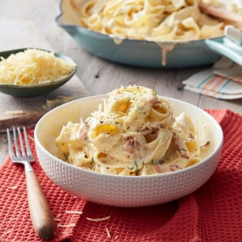

PIZZA recipe:

Description:
The following is the process of preparing a quick and easy fettuccine carbonara which requires a 7 minutes for prepping and takes 10 minutes to cook.
Ingredients:
- 375g dried fettuccine
- 1 tbsp. olive oil
- 2 garlic cloves, crushed
- 200g bacon, thinly sliced
- 2 eggs
- 3/4 cup (185 ml) cooking cream (light thickened cream)
- 1 cup (125g) perfect italiano extra sharp parmesan grated
- pepper, to taste
- 1/4 cup fresh flat-leaf parsley finely chopped
steps:
-
Cook pasta in large saucepan of boiling water, until just tender following the packet instructions. Drain and return to pan over low heat
-
Meanwhile, heat oil in a medium frying pan over medium-high heat. Cook garlic and bacon, stirring, for 3-4 minutes or until crisp. Set aside.
-
Whisk eggs, cream and 3/4 cup (30 g) of the parmesan in a large jug. Season with pepper. Add egg mixture and half the parsley and half the bacon mixture to pasta. Toss gently to combine and warm through (do not over heat).
-
Serve pasta topped with remaining parsley, bacon and parmesan.